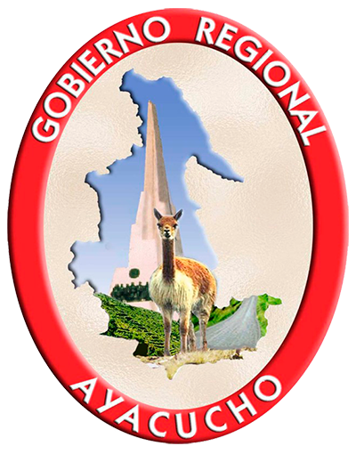

<div class="pf-example">
  <div class="blank-slate-pf">
    <div class="blank-slate-pf-icon">
      
    </div>
    <h1>Sistema de certificacion ambiental</h1>
    <p>Este sistema esta disenado para administrar los procesos de solicitud y otorgamiento de certificaciones ambientales en el marco de ejecucion de proyectos de inversion.</p>
    <p>Lea mas acerca del sistema en <a href="#">documentacion</a>.</p>
    <div class="blank-slate-pf-main-action">
      <button class="btn btn-primary btn-lg" ui-sref="proyecto.app.certificacionAmbiental.proyecto.buscar">
        Empezar
      </button>
    </div>
  </div>
</div>
